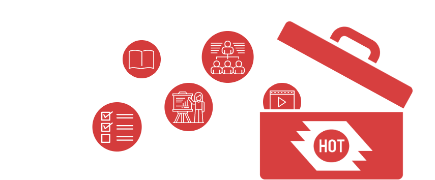

La boîte à outils HOT est conçue pour fournir à la communauté OSM un référentiel de matériel de formation, ainsi que des guides étape par étape développés par l’équipe de formation HOT. Le matériel couvre tout, de la configuration des appareils mobiles à l’exportation des données OSM pour le contrôle de la qualité et l’analyse. En plus elle regroupe le matériel de formation complet de HOT, cette boîte à outils regroupe un grand nombre d’autres ressources OSM prenant en charge des projets de cartographie; des guides de logiciels aux directives sur l’organisation de mapathon. Les supports de formation de HOT sont téléchargés sous une licence CC by 4.0, ce qui signifie qu’ils sont libres d’utilisation et d’adaptation - nous vous demandons simplement de créditer HOT et de conserver une licence Creative Commons. En savoir plus sur Creative Commons et son utilisation gratuite ici.
